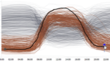

Bike Sharing Atlas: Visual Analysis of Bike-Sharing Networks

Venue. IJT (2018)
Authors. Michael Oppermann, Torsten Möller, Michael Sedlmair
Abstract. In this paper, we introduce an interactive visualization system, bikesharingatlas.org, that supports the explorative data analysis of more than 468 bike-sharing networks worldwide. The system leverages a multi-coordinated view approach and innovative interaction techniques can help, for instance, to expose capacity bottlenecks, commuting patterns, and other network characteristics. Our broader goal is to illustrate how visual analysis can be used for exploring distributed, heterogeneous data from smart cities. Based on our collaboration with different target users, we present usage scenarios that show the potential of our approach to understanding bike-sharing and urban commuting behaviors.